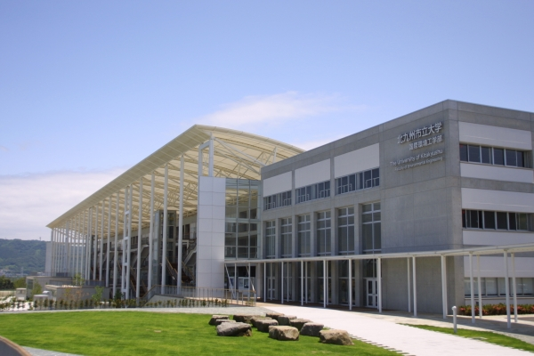
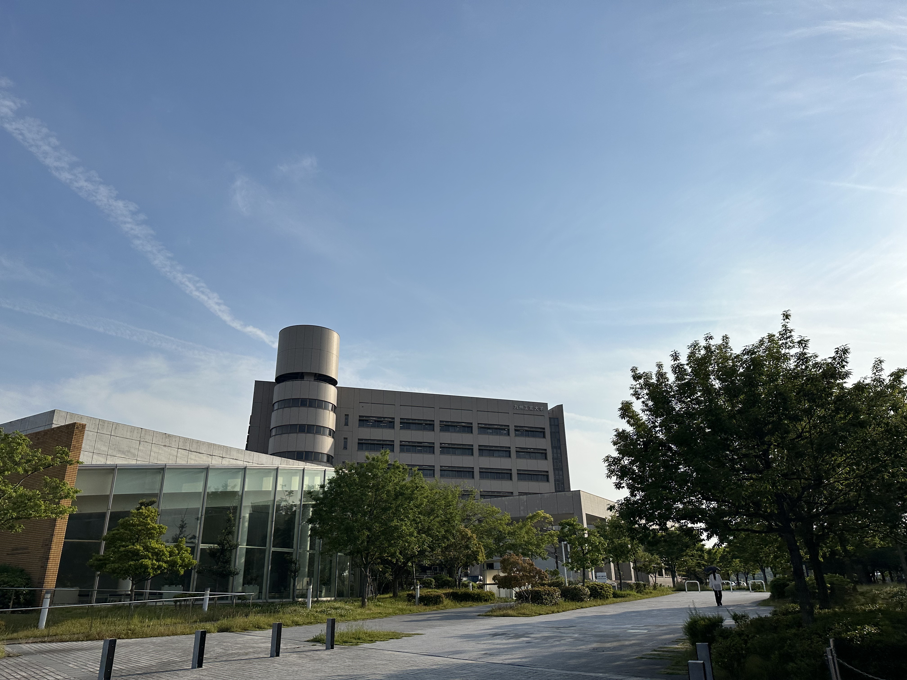
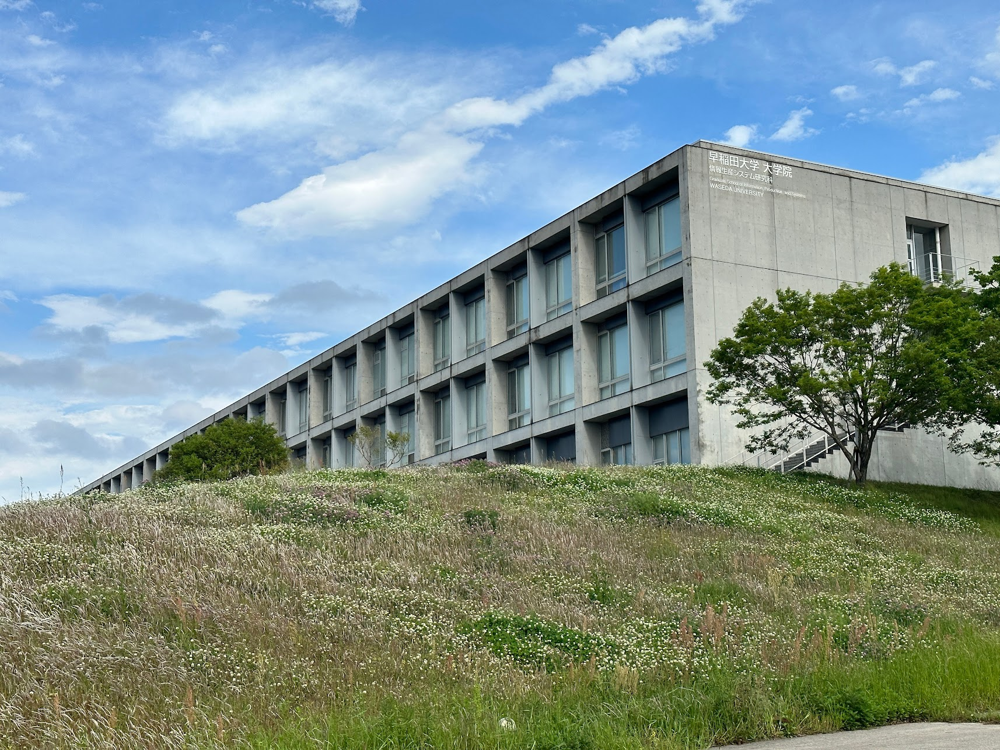

The university of Kitakyushu

2007 broadcast Main story, about 1 minute
Short animation "Cat's Rally" broadcast on the NHK TV program "Ani * Kuri15". An omnibus project of a short animation by 15 creators representing Japan. Shinkai challenges a simple and soft taste like the anime that he was familiar with when he was a child, which anyone can enjoy comically with a cat as the main character. The character design is by Takayo Nishimura of "5 Centimeters Per Second" and "Children Who Chase Lost Stars", and the music is by Tenmon, who is familiar with Shinkai's works.
Kyushu Institute of Technology

Broadcast in March 2020 Main story, 30 seconds
"Myanmar", the sixth work of the Taisei animation series CM. The main character is a young employee involved in the construction of the "Yangon New Specialty Hospital" that supports the country's advanced medical care in Myanmar, which is experiencing rapid economic growth. His growth in working hard in the field far from his hometown is depicted through a letter from his sister who lives in Japan. Makoto Shinkai is the general director of the animation, and Yoko Miki, who was the assistant director and color designer for the movie "Weathering with You," is in charge of the director, storyboard, and direction. The voice appearance is Mayu Matsuoka.
Waseda University (IPS)

Broadcast in August 2016 Main story
Suntory Tennensui and theatrical movie "Your Name. ] Collaboration CM work.
"Mitsuha's feelings" (15 seconds), "Taki's feelings" (15 seconds), and "Overlapping feelings" (30 seconds). In addition to the video from the main part of the movie, a new cut was added and produced.
See More